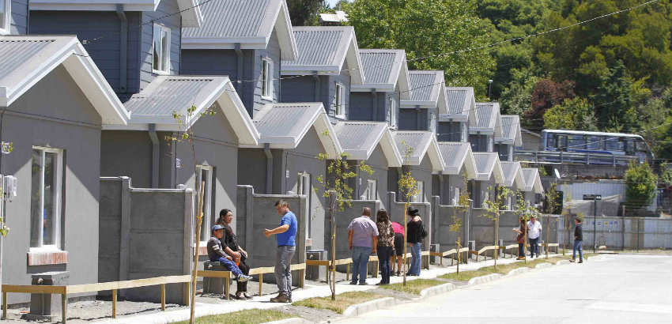
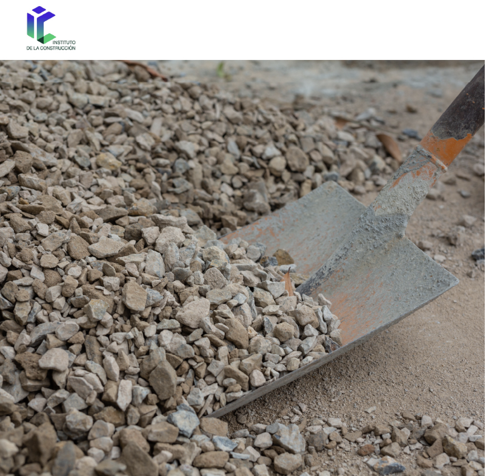

Noticias Construcción
El único equipo finalista de regiones, compuesto por estudiantes de arquitectura e ingeniería en construcción de la Universidad Autónoma de Temuco, fue el ganador del primer lugar del concurso Desafío NetZero 2030, y de una pasantía a la Universidad de Nottingham, Reino Unido, que se llevará a cabo en mayo de 2024. Esta iniciativa, liderada por Construye 2025 y el Colegio de Arquitectos, convocó a estudiantes de todo Chile, para diseñar un proyecto de vivienda social sustentable para Temuco, desarrollado durante un año. Se logró un diseño integrado e innovador para una vivienda social DS19, con características tales como cero consumo neto de energía, cero emisiones netas de CO2, economía circular e industrialización, siendo los ejes centrales del concurso, en el marco de lograr la carbono neutralidad en Chile hacia el 2050.
La venta de viviendas en la Región Metropolitana disminuyó 12% en comparación con el primer semestre del año pasado y 17% respecto del semestre anterior, según el último Informe de Mercado Inmobiliario publicado por la gerencia de Estudios y Políticas Públicas de la Cámara Chilena de la Construcción (CChC).
Leer más Numerosos profesionales de la construcción están al tanto de la futura escasez de áridos en nuestro país. Si a esto le sumamos toda la cultura referente a la Economía Circular, se dan las condiciones para la creación de normas que permitan el uso de alternativas de materiales de reemplazo en la fabricación de hormigones, así como en otros aspectos del sector de la construcción. En este contexto, se encuentran en consulta pública por parte del INN algunos proyectos de norma, tanto en noviembre de 2023 como a corto plazo. Estos proyectos son los siguientes: NCh 3848. Pavimentos – Áridos reciclados – Trazabilidad y requisitos para incorporar en bases y subbases de pavimentos. NCh 3849. Áridos – Áridos reciclados en base a hormigón endurecido y materiales de construcción sin clasificar – Clasificación y requisitos...
Leer más